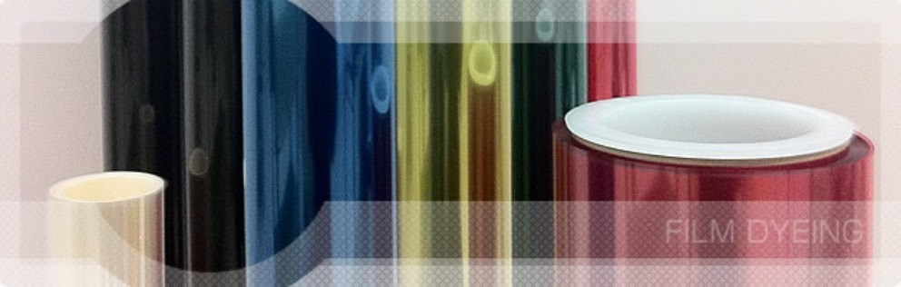
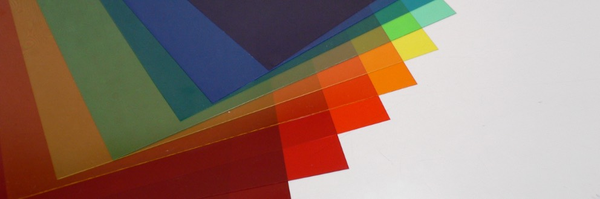
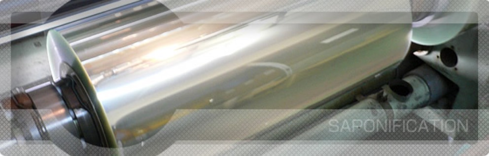
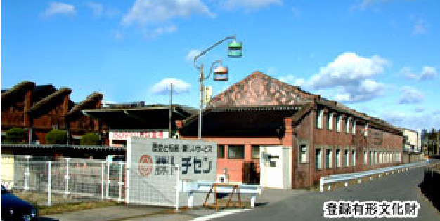
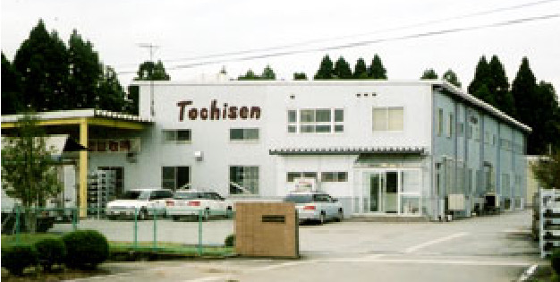

栃木県足利市・1914年から続く
水で染める。だから
染まらない素材が染まる。
ポリエステルフィルムへの水溶媒による染色加工を確立した、日本で唯一のメーカーです。低温で加工できるため、溶剤染色では不可能なポリカーボネート・アクリル・ナイロン・TACにも着色できます。染料を含浸させるので、コーティングのような層間剥離が起きません。

1社
水溶媒染色は国内唯一
12〜300μ
加工できる厚み
1400mm
加工できる最大幅
1914年〜
足利織物からの歩み
STAINING FILM
染色フィルム
染料を分散させた液の中にフィルムを浸けて（ディッピング）、染料を浸透させる着色加工です。フィルム自体に染料を含浸させるため、コーティング製品のような着色面の層間剥離がなく、抜き加工など2次加工での歩留まり向上に寄与します。
低温での加工が可能なため、溶剤染色では不可能なポリカーボネート・アクリル・ナイロン・TACなどの基材にも着色できます。染料の選択肢が多く、多色・小ロットでの加工に対応します。原反支給のほか、当社での基材手配も承ります。

加工規格
- 幅
- 500mm 〜 1400mm
- 厚み
- 12μ 〜 300μ
- 巻長
- 基材の種類・厚みにより異なります
加工対象基材
ポリエステルフィルム（PET）／ポリカーボネートフィルム／アセテートフィルム（TAC）／アクリルフィルム
製品用途
ウィンドウフィルム基材／テープ基材／舞台照明用フィルター／プラスチックワッシャー・スペーサー／電線被覆
OTHER PROCESSING
そのほかの加工
UVカット加工（T-UV）
染色加工技術を応用し、紫外線吸収剤をフィルムに含浸させる新しいタイプのUVカット加工です。基材の透明性・風合いを維持したまま、優れた紫外線遮蔽効果と耐候性を付与します。染色加工と同様に層間剥離がなく、練りこみ品では不可能な小ロットにも対応できます。
- 幅
- 800mm 〜 1400mm
- 厚み
- 50μ 〜 250μ
- 基材
- ポリエステルフィルム（PET）
- 用途
- ラミネートフィルム基材／ウィンドウフィルム基材
鹸化処理 受託加工
日本国内では数少ない鹸化処理のアウトソーシング先として、偏光板に必要なTACフィルムの鹸化処理を承っています。
- 幅
- 500mm 〜 1490mm
- 厚み
- 40μ 〜 350μ
- 基材
- アセテートフィルム（TAC）
- 用途
- LCD用偏光板／メーター・計器用偏光板／サングラス偏光板

曇り止め（防曇）フィルム
トリアセチルセルロース（TAC）フィルムの表層を改質することで、親水性および吸湿性をフィルムに付与します。フィルム自体を改質しているため、コーティング製品のような剥離による性能劣化がなく、高い性能持続性を持ちます。基材のTACフィルムは主に光学用途に用いられており、高い透過性が特徴です。
- 厚み
- 127μ・180μ・245μ ※245μは開発品
- 用途
- フェイスガード／冷凍ショーケース／サングラス・ゴーグル
- 粘着付
- 保護フィルム／防曇フィルム／粘着層／PETセパ 幅800mm・巻長50m
C-Mal
自動車用フィルム「シーマル」
ファッション性と高い機能性を兼ね備えたカーウィンドウフィルムです。1997年から販売しています。
太陽エネルギーは、熱的作用の大きい近赤外線に約50%、人間に見える可視光線に約45%含まれています。透明の熱線遮断フィルムは近赤外線を遮蔽することで断熱効果を持たせていますが、可視光線は透過するため、若干の熱を感じます。
IRタイプは、可視光線の熱線を染色層の吸収でコントロールし、さらに近赤外線を金属酸化物超微粒子で吸収する二重の熱線遮蔽構造です。
光学特性
下表は「自動車窓ガラス用フィルム JIS S 3107」に基づき、3mmフロートガラスに貼って測定した実測値です。保証値ではありません。
| 品番 | 可視光線 透過率 |
紫外線 透過率 |
日射 反射率 |
日射 吸収率 |
日射 透過率 |
遮蔽 係数 |
|---|---|---|---|---|---|---|
| IRBK00 | 1% | 1% | 6% | 63% | 31% | 0.59 |
| IRBK05 | 5% | 1% | 7% | 58% | 35% | 0.61 |
| IRSM15 | 15% | 1% | 7% | 53% | 40% | 0.66 |
| 品番 | 可視光線 透過率 |
紫外線 透過率 |
日射 反射率 |
日射 吸収率 |
日射 透過率 |
遮蔽 係数 |
|---|---|---|---|---|---|---|
| BK00 | 1% | 1% | 8% | 45% | 47% | 0.70 |
| BK05 | 5% | 1% | 8% | 43% | 49% | 0.72 |
| SM15 | 13% | 1% | 8% | 41% | 51% | 0.74 |
| SM25 | 25% | 1% | 9% | 32% | 59% | 0.79 |
| SM35 | 32% | 1% | 9% | 29% | 62% | 0.82 |
| BR30 | 29% | 1% | 9% | 34% | 57% | 0.78 |
| SLR-18 | 18% | 1% | 54% | 32% | 14% | 0.28 |
| 品番 | 可視光線 透過率 |
紫外線 透過率 |
日射 反射率 |
日射 吸収率 |
日射 透過率 |
遮蔽 係数 |
|---|---|---|---|---|---|---|
| CPブルー | 63% | 2% | 9% | 11% | 80% | 0.95 |
| CPグリーン | 62% | 2% | 9% | 15% | 76% | 0.92 |
| CPイエロー | 85% | 2% | 9% | 9% | 82% | 0.96 |
| CPピンク | 62% | 2% | 9% | 12% | 79% | 0.94 |
紫外線を99%カット
人体に有害な紫外線を99%カットすることで、日焼けから肌を保護し、車の内装材の変色・劣化の進行を抑制します。
冷暖房効率
熱線をカットすることで夏の日ざしを抑えて冷房効果を高め、冬は車内の熱が逃げにくくなり暖房効果を高めます。
飛散防止とハードコート
ガラスが破損した場合に飛散を防ぎ、安全性に寄与します。耐摩耗性の高いハードコートを施しているため、施工時や窓の開閉、クリーニングの際にも傷がつきにくくなっています。
COMPANY
企業情報
「未来を曇らせない。確かな技術で、新時代に挑戦。」
私たちトチセンは、足利の織物文化の流れの中から生まれ、百年以上の歴史を歩んでまいりました。戦時中の企業統合を経て繊維製品の加工販売を中心に事業を広げ、時代の移り変わりとともに化成品フィルムの特殊加工へと舵を切りました。
本社の赤煉瓦構造群もまた、竣工当時からの時間と想いが刻まれています。現在では「国登録有形文化財」「近代化産業遺産」「推薦産業遺産」に認定されておりますが、それは単なる歴史的建造物ではなく、先人たちが未来を信じて積み上げた“志”の象徴です。
— 代表取締役社長 秋草 紫郎


- 社名
- 株式会社 トチセン
- 本社
- 〒326-0338 栃木県足利市福居町1143番地
TEL 0284-71-2151 ／ FAX 0284-71-2175 - 富山工場
- 〒930-0362 富山県中新川郡上市町稗田1番地
TEL 076-473-3200 ／ FAX 076-473-3202 - 創業年月日
- 1943年10月
- 設立年月日
- 1949年5月
- 資本金
- 2,500万円
- 役員
- 代表取締役会長 秋草 俊二
代表取締役社長 秋草 紫郎
常務取締役 志田 等
取締役 板橋 亨
監査役（非常勤） 渡辺 昇彦 - 事業内容
- 化成品フィルムの染色・特殊加工および販売
繊維製品の販売
工業用資材・包装用資材等の販売 - 認証・認定
- ISO9001（フィルム事業部・1999年取得）／国登録有形文化財／近代化産業遺産／推薦産業遺産／足利市100年企業／とちぎSDGs推進企業／健康経営優良法人
- 関連会社
- 関東パック株式会社（栃木県足利市福居町1143番 TEL 0284-71-8651／FAX 0284-71-8652）
- 主要取引銀行
- 日本政策金融公庫 宇都宮支店／足利銀行 足利支店／商工組合中央金庫 足利支店／足利小山信用金庫 福居支店
- 受付時間
- 月〜金曜 9:00〜17:00
※ 掲載情報は現行サイトの記載（2026年1月現在）によります。
HISTORY
沿革
1914年の「足利織物株式会社」設立から、112年。織物から、フィルムへ。
- 1914.03
- 「足利織物株式会社」設立
- 1919.05
- 「明治紡織株式会社」設立
- 1943.05
- 戦時企業整備令により県内業者を統合し「栃木整染有限会社」を設立
- 1948.06
- 設立地の足利市雪輪町から、同市内福居町に移転
- 1949.05
- 明治紡織（株）と合併し「栃木整染株式会社」を設立。資本金130万円、中島良助社長就任
- 1955.03
- 工場内で火災が発生、生産設備の3分の1を消失（損害約7,000万円）
- 1956.03
- 旭化成工業（株）との提携によりサラン繊維の加工を開始
- 1961.11
- 自主的な技術研究により硬質フィルムの加工方法を開発。染色機の一号機を完成し原反加工を開始
- 1962.05
- ヒートセット機を新設、トリコット染色整理を開始
- 1962.07
- 中島良助会長、高山鉦八社長に就任
- 1963.06
- 「トチセン化成工業株式会社」設立。ポリエチレンフィルムの製造販売を開始
- 1964.09
- 東京オリンピック協賛、日の丸100万枚の加工を行う
- 1969.12
- 特殊コーティング機を増設、加工能力が増大
- 1971.08
- 商事部を設置、繊維製品の製造販売を開始
- 1972.07
- 高山鉦八会長、秋草好郎社長就任
- 1973.01
- 公害処理施設が完成、稼働開始
- 1975.01
- 社名を「株式会社トチセン」に改称
- 1975
- 資本金1,900万円に、さらに3,500万円に増資
- 1978.05
- オイルショック後の企業体質悪化に対処し、栃木県の指導と指定を受けてフィルム加工への重点指向の事業転換を策定
- 1980.06
- 繊維加工部門を縮小し余地を足利市に売却。残地でフィルム加工設備を重点的に強化
- 1981.04
- 栃木県経営合理化モデル工場育成指導企業の指定を受ける
- 1984.03
- フィルム処理工場の建物を増設
- 1986.01
- 秋草好郎会長、横堀幸三社長就任
- 1990.03
- フィルム処理工場の建物を増設
- 1990.11
- 資本金2,500万円に減資
- 1992.09
- 富山工場の建設用地を取得
- 1995.11
- 富山工場が完成
- 1997.02
- カーウィンドウフィルム「シーマル」の販売を開始
- 1997.05
- 富山工場が稼働開始
- 1999.10
- フィルム事業部において ISO9001 の認証を取得
- 1999.11
- 本社レンガ工場2棟が国登録有形文化財の指定を受ける
- 2000.05
- 富山工場 第二期建物を増設、生産設備を2系列化
- 2001.05
- 富山工場 第三期建物を増設、クリーンルーム化
- 2001.06
- 関東パック株式会社を経営
- 2003.08
- 関東パック株式会社が足利市藤本町から同市内福居町（（株）トチセン内）に移転
- 2004.01
- 横堀幸三会長、秋草俊二社長就任
- 2005
- 栃木県フロンティア企業に認定される
- 2007
- 足利の織物関連遺産として、本社が経済産業省近代化産業遺産に認定される
- 2008.03
- 本社汽罐室および汽罐2基が国登録有形文化財に追加認定される
- 2010
- 本社工場にクリーンルームを新設、貼合加工を開始
- 2017
- 本社工場のクリーンルームを増設
- 2021.08
- とちぎ健康経営事業所に認定される
- 2022.03
- とちぎSDGs推進企業に認定される
- 2022.04
- 経済産業省 事業継続力強化計画の認定を受ける
- 2022.04
- 足利市 足利市100年企業として表彰される
- 2024.02
- めぶきビジネスアワードにて、太陽光発電塗料を活用した世界初のプラスチックフィルム太陽光発電の開発で特別賞を受賞
- 2024.03
- 健康経営優良法人2024（中小規模法人部門）に認定される
- 2024.05
- 産業遺産学会より、トチセン赤レンガ工場群が推薦産業遺産に認定される
- 2024.10
- 栃木県 健康長寿とちぎづくり表彰 健康経営部門 優秀賞を受賞
- 2025.03
- 「健康経営優良法人2024」中小規模法人部門にて認定
- 2025.05
- 中央労働災害防止協会より中小企業無災害記録 金賞を受賞
- 2025.09
- 文化財多言語解説整備事業における補助金が採択される
- 2026.01
- 秋草俊二会長、秋草紫郎社長就任
溶剤では染まらない基材こそ、ご相談ください。
ポリカーボネート、アクリル、ナイロン、TAC。水溶媒による低温染色だからできる着色があります。多色・小ロットにも対応します。原反支給でも、基材の手配込みでも承ります。
0284-71-2151
受付時間 月〜金曜 9:00〜17:00／FAX 0284-71-2175
〒326-0338 栃木県足利市福居町1143番地